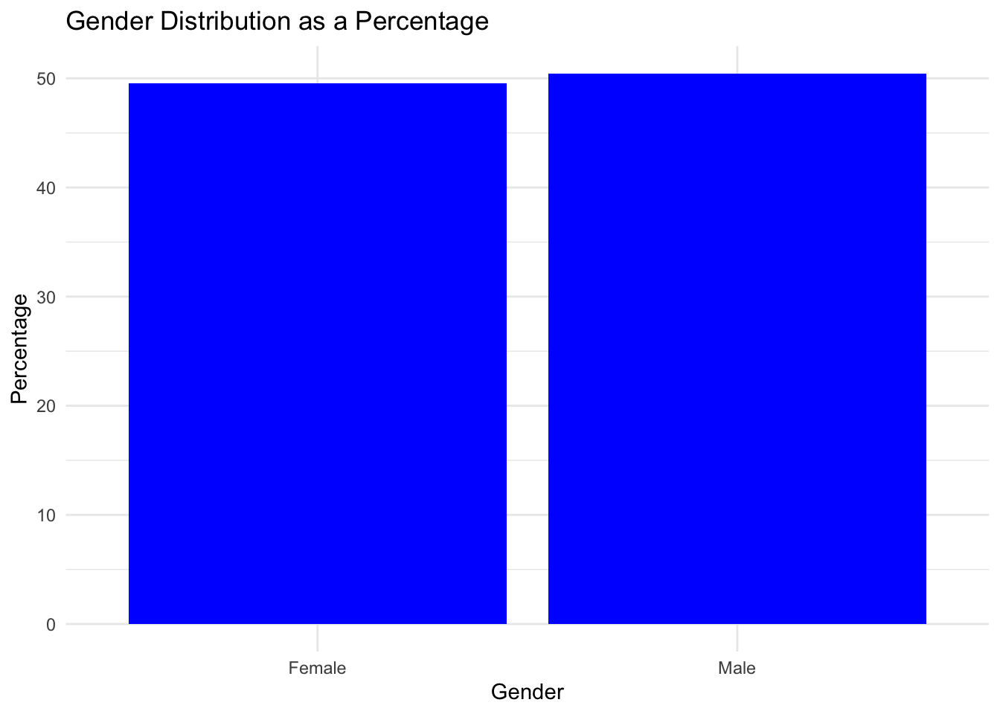
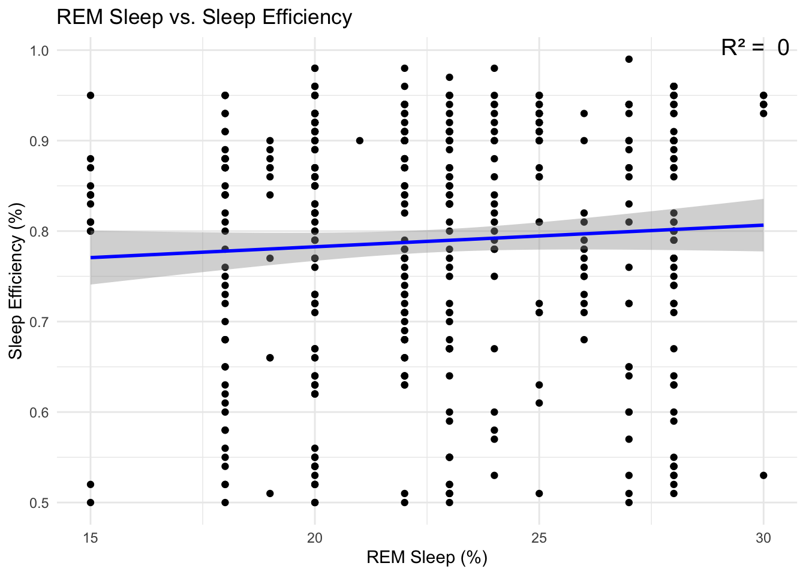
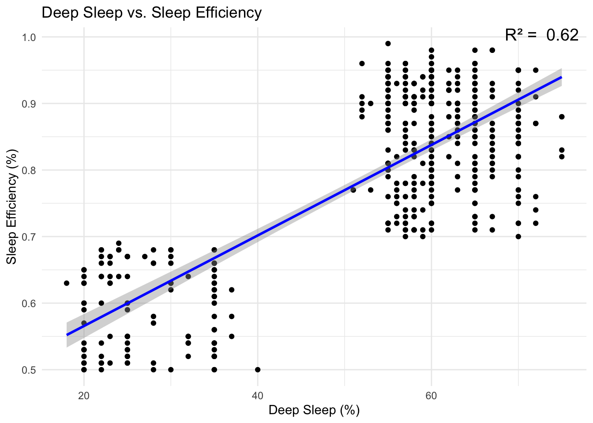

In this exploration, we’re going to take a closer look at the factors that influence sleep quality, such as the proportion of deep and REM sleep, as well as the percentage of light sleep. My personal challenges with maintaining consistent sleep patterns have led me to investigate this topic more deeply. For this analysis, I’ve selected a comprehensive dataset available on Kaggle, which provides valuable insights into sleep efficiency. You can access the dataset here to follow along or conduct your own exploration: https://www.kaggle.com/datasets/equilibriumm/sleep-efficiency.
First, let us import the dataset from Kaggle as such.
library(dplyr)
Attaching package: 'dplyr'
The following objects are masked from 'package:stats':
filter, lag
The following objects are masked from 'package:base':
intersect, setdiff, setequal, union
Next, we will find the summary of each variable. For instance, we can see that the mean sleep efficiency is -.7889, and the median is 0.8200, which is fairly high but can be further improved.
summary(sleep_data)
ID Age Gender Bedtime
Min. : 1.0 Min. : 9.00 Length:452 Length:452
1st Qu.:113.8 1st Qu.:29.00 Class :character Class :character
Median :226.5 Median :40.00 Mode :character Mode :character
Mean :226.5 Mean :40.29
3rd Qu.:339.2 3rd Qu.:52.00
Max. :452.0 Max. :69.00
Wakeup.time Sleep.duration Sleep.efficiency REM.sleep.percentage
Length:452 Min. : 5.000 Min. :0.5000 Min. :15.00
Class :character 1st Qu.: 7.000 1st Qu.:0.6975 1st Qu.:20.00
Mode :character Median : 7.500 Median :0.8200 Median :22.00
Mean : 7.466 Mean :0.7889 Mean :22.62
3rd Qu.: 8.000 3rd Qu.:0.9000 3rd Qu.:25.00
Max. :10.000 Max. :0.9900 Max. :30.00
Deep.sleep.percentage Light.sleep.percentage Awakenings
Min. :18.00 Min. : 7.00 Min. :0.000
1st Qu.:48.25 1st Qu.:15.00 1st Qu.:1.000
Median :58.00 Median :18.00 Median :1.000
Mean :52.82 Mean :24.56 Mean :1.641
3rd Qu.:63.00 3rd Qu.:32.50 3rd Qu.:3.000
Max. :75.00 Max. :63.00 Max. :4.000
NA's :20
Caffeine.consumption Alcohol.consumption Smoking.status Exercise.frequency
Min. : 0.00 Min. :0.000 Length:452 Min. :0.000
1st Qu.: 0.00 1st Qu.:0.000 Class :character 1st Qu.:0.000
Median : 25.00 Median :0.000 Mode :character Median :2.000
Mean : 23.65 Mean :1.174 Mean :1.791
3rd Qu.: 50.00 3rd Qu.:2.000 3rd Qu.:3.000
Max. :200.00 Max. :5.000 Max. :5.000
NA's :25 NA's :14 NA's :6
Next, let us analyze the the gender representation in the dataset.
sleep_data_summary <- sleep_data %>%count(Gender) %>%mutate(Percentage = n /sum(n) *100)# Create the bar plot with the calculated percentagesggplot(sleep_data_summary, aes(x = Gender, y = Percentage, fill = Gender)) +geom_bar(stat ="identity", fill ="blue") +labs(title ="Gender Distribution as a Percentage",x ="Gender",y ="Percentage") +theme_minimal()

From this bar plot above, we can see that males and females are almost equally represented in the dataset. This makes our findings relevant to both genders.
Next, we want to analyze the relationship between REM sleep percentage and sleep efficiency. While deep sleep is crucial for physical restoration and strengthening the immune system, REM sleep is marked by active brain patterns and rapid eye movement despite the body’s muscle relaxation. Therefore, I wanted to see which is associated more with sleep efficiency.
lm_rem <-lm(Sleep.efficiency ~ REM.sleep.percentage, data = sleep_data)summary_rem <-summary(lm_rem) # Capture the model summary for later use# Plot REM Sleep vs. Sleep Efficiency with correlation line and R² valueggplot(sleep_data, aes(x = REM.sleep.percentage, y = Sleep.efficiency)) +geom_point() +geom_smooth(method ="lm", col ="blue") +annotate("text", x =Inf, y =Inf, hjust =1.1, vjust =1.1,label =paste("R² = ", round(summary_rem$r.squared, 2)),size =5) +labs(title ="REM Sleep vs. Sleep Efficiency",x ="REM Sleep (%)",y ="Sleep Efficiency (%)") +theme_minimal()
`geom_smooth()` using formula = 'y ~ x'

lm_rem <-lm(Sleep.efficiency ~ Deep.sleep.percentage, data = sleep_data)summary_rem <-summary(lm_rem) # Capture the model summary for later use# Plot REM Sleep vs. Sleep Efficiency with correlation line and R² valueggplot(sleep_data, aes(x = Deep.sleep.percentage, y = Sleep.efficiency)) +geom_point() +geom_smooth(method ="lm", col ="blue") +annotate("text", x =Inf, y =Inf, hjust =1.1, vjust =1.1,label =paste("R² = ", round(summary_rem$r.squared, 2)),size =5) +labs(title ="Deep Sleep vs. Sleep Efficiency",x ="Deep Sleep (%)",y ="Sleep Efficiency (%)") +theme_minimal()
`geom_smooth()` using formula = 'y ~ x'

From the R^2 values and the scatter plots above, we can see that deep sleep has a much higher correlation with sleep efficiency. The higher correlation suggests that as deep sleep increases (or decreases), there is a stronger tendency for sleep efficiency to also increase (or decrease), and this relationship is more consistent for deep sleep than for REM sleep. This could mean that deep sleep might have a more direct or stronger impact on the overall quality of sleep (as measured by efficiency) than REM sleep does.